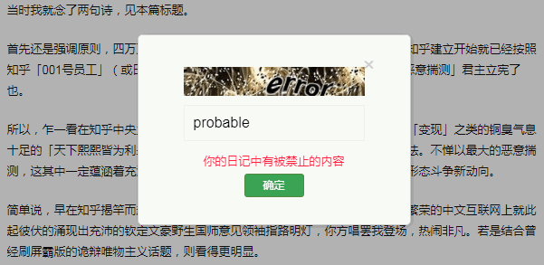

昨天一天都在整理内务，把寒带装备清洗并入库，翻出热带装备清洗并配置。刚爬起来，耽误了新闻联播及其重播时间，并且由于已经将「Adobe Flash」扫入历史の垃圾堆，无法在C站接受定番之「网络视频」推送。大概看看目录，似乎没提到美帝灯塔国「短信怪人」连续发布最高指示相关事宜。
上网乱转，在国际化大都市「华语第一精日论坛」发现了一条重要情报：《知乎两百万粉首席大危张佳玮被揭发是台复读机》
当时我就念了两句诗，见本篇标题。
首先还是强调原则，四万万五千万知乎帐号都明白「入乡随俗」的道理，自打知乎建立开始就已经按照「知乎001号员工」（或曰「拿摩温」）周源的家学渊源「不惮以最大的恶意揣测」君主立宪了也。
所以，乍一看在知乎中央力挺之下纠集几百万粉丝大造声势，似乎是为了什么「变现」之类的铜臭气息十足的「天下熙熙皆为利来，天下攘攘皆为利往」目的，其实都是烟幕弹障眼法。不惮以最大的恶意揣测，这其中一定蕴涵着充沛的政治和意识形态内容并引领了激烈的政治和意识形态斗争新动向。
简单说，早在知乎揭竿而起之前，百善の新时代中国特色社会主义大好形势下繁荣的中文互联网上就此起彼伏的涌现出充沛的钦定文豪野生国师意见领袖指路明灯，你方唱罢我登场，热闹非凡。若是结合曾经刷屏霸版的诡辩唯物主义话题，则看得更明显。
就比方说，复旦残联下属滴血认亲实验室不满足于偷坟掘墓以及对「大数据」进行「捅妓」，还曾经发挥过主观能动性，对我中华兲朝上国那些历史悠久的千年豪门万年世家进行过鉴定工作。山东曲阜衍圣公被「C3
通古斯太君」杜鹃下蛋塞野种窃家窃族窃国这事，就是其中典型案例，直接导致了自诩正统的「南孔Q1
叶尼塞太君」到处申冤。
按照数学渣的职业习惯举一反三触类旁通，与山东曲阜衍圣公相提并论一时瑜亮的万年豪门，就是江西龙虎山天师府，据称也是在「民国三十八年」之后裹胁正统转进至宝岛进行「远程救国」「云革命」，遥控兲朝境内牛鼻子们掀起一阵又一阵玄学发展观高潮。
所以，不惮以最大的恶意揣测，这「张」家最起码也分为南北两支，说不定四面八方都在开枝散叶呢。就比方说以名著《心灵史》替「哲合忍耶」翻案的张承志，乃本朝知名红皮绿色基因，公开情报显示：红卫兵祖师爷，京师大学堂历史系考古专业高材生，精通英语、日语、西班牙语、阿拉伯语、蒙古语、满语、哈萨克语……可不是「傻哔绿人」哟。
这么一看，是不是与这位知乎大危张佳玮的「人设」有点雷同呢？
没错，无论情报来源是国际化大都市「华语第一精日论坛」还是来自国际一流和谐宜居之都「高学历精英社交圈」，很多严肃的分析都已经指出，隐藏在帐号张佳玮这三个汉字之后的，是「一个团队」。
至于这个「团队」究竟在策划什么企图动摇我中华兲朝上国江山社稷抑或是发动第六次中东战争兼第三次世界大战的阴谋诡计，目前难以得出确切的结论。为了获得进一步的信息，还需要舍生忘死奋斗在地下战线的情报工作者们再接再厉。
